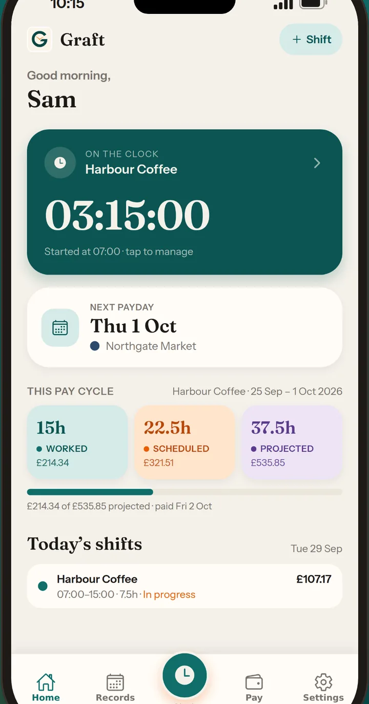

Grátis
Grátis
- 2 trabalhos ativos
- 1 modelo de turno
- Ponto, Registros e Pagamento
- Exportação de CSV
- Lembretes, widget e Atividade ao Vivo
- Arquivo de backup ou iCloud opcional
Para trabalho por hora
Registre o ponto, anote cada trabalho e veja uma estimativa do que você leva para casa.

Um toque para o turno de hoje. Os intervalos pausam o cronômetro. Turnos que atravessam a madrugada entram na conta, e você pode corrigir os horários antes de salvar.
Veja uma semana, um mês ou um ciclo de pagamento. Mais de um trabalho pode aparecer na mesma tela.
Primeiro o bruto e depois o imposto e as outras deduções que você define em cada trabalho. No Reino Unido e na Ilha de Man, isso pode ser um valor ilustrativo de PAYE ou de ITIP. Em qualquer outro lugar, você informa as suas próprias porcentagens. São estimativas, não um holerite.
Cada trabalho tem a própria taxa, hora extra, adicional de férias e ciclo de pagamento. Salve um turno como modelo. O grátis inclui 2 trabalhos ativos e 1 modelo.
Um lembrete antes de um turno e, se você quiser, um aviso ao chegar a um local de trabalho salvo. O widget da Tela de Início mostra o que vem a seguir. Uma Atividade ao Vivo permanece enquanto você está no ponto.
Trabalhos, turnos e pagamento ficam no iPhone. Exporte um arquivo de backup ou um CSV, ou ative uma cópia opcional no seu próprio iCloud.


Grátis
Mensal
ou anual, com 1 mês grátis para um novo assinante. A App Store mostra o preço do seu país. Quando o anual custa menos do que doze meses, a tela de assinatura mostra quanto você economiza.
O mensal não tem teste grátis. O mês grátis do anual passa para o preço anual, a menos que você cancele pelo menos 24 horas antes do fim. A Apple cobra a assinatura. Os preços no botão de assinar vêm da App Store. Os valores de pagamento no app são estimativas, não um holerite.
Abra o Graft, entre e vá em Ajustes → Conta. O mensal não tem teste grátis. O anual é um mês grátis para um novo assinante e depois o preço anual. O plano que você escolhe mostra o preço da App Store, com Assinar e Restaurar compras.
No mesmo iPhone, com o Apple ID que comprou o Premium, abra Ajustes → Conta → Restaurar compras. A restauração coloca o Premium na conta do Graft em que você está conectado.
O Graft não consegue cancelar uma assinatura da Apple de dentro do app. A Apple cobra e a Apple cancela.
O mês grátis do anual passa para o preço anual, a menos que você cancele pelo menos 24 horas antes do fim do teste. Depois disso, e no mensal, cancele pelo menos 24 horas antes do fim do período para interromper a próxima renovação. O Premium continua disponível até terminar o tempo que você já tem. Apagar o app, ou apagar a sua conta do Graft, não cancela a assinatura.
Pagamento, renovações e reembolsos são tratados pela Apple nos termos do Contrato de licença de usuário final do aplicativo licenciado da Apple.
Os valores do Graft são estimativas, não um holerite. O Graft não conhece o seu código de imposto, o seu empréstimo estudantil nem todas as deduções que o empregador aplica. Compare a estimativa com o seu holerite. O holerite é a referência.
Trabalhos, turnos e pagamento ficam no iPhone. O acesso (nome e e-mail) fica com a Clerk. Um backup no iCloud, se você ativar, vai para a sua própria conta do iCloud. Veja a Política de Privacidade.
Cancele nos ajustes da sua conta da App Store, pelo menos 24 horas antes do fim de um teste ou de um período pago. Os passos estão em Assinaturas. Apagar o Graft não cancela a assinatura.
Escreva para GraftSupport@proton.me. Inclua a versão do iOS e o que você esperava que acontecesse.
Dúvidas de privacidade podem usar o mesmo endereço. A Política de Privacidade e os Termos de Uso descrevem o que o app faz hoje.